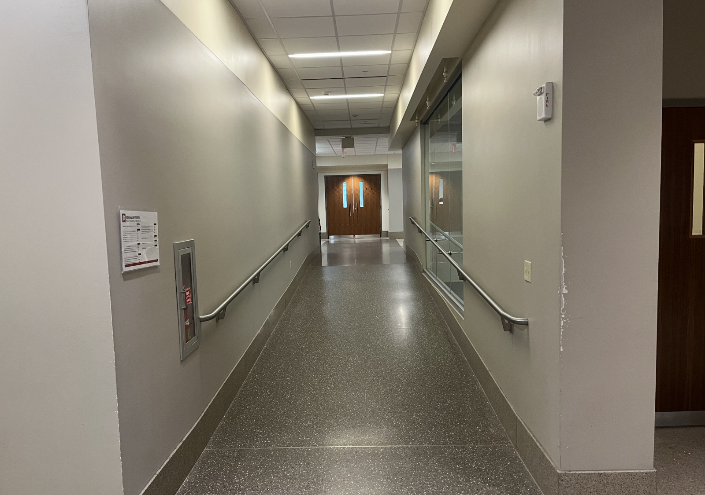
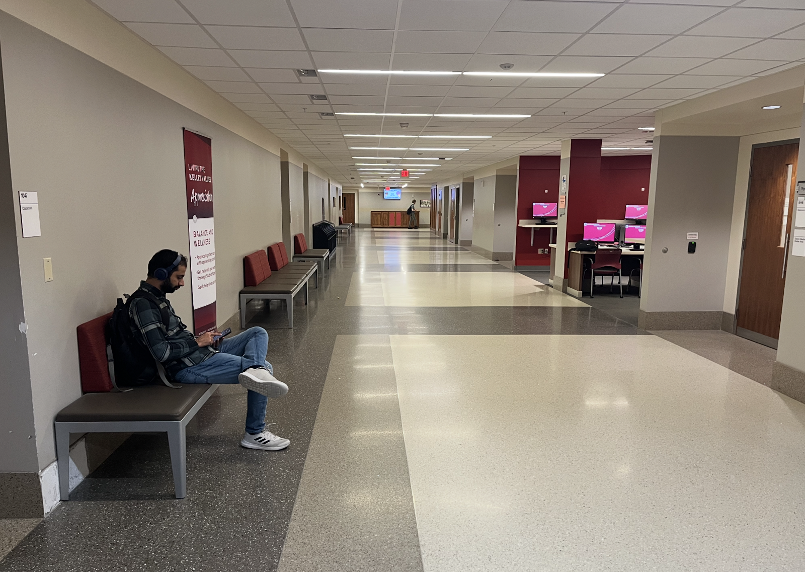

Hodge Hall is the Kelley School of Business undergraduate center — 1309 E. 10th Street, Bloomington. Students, visitors, and staff are supposed to find their way through it.
← All work
I310 Multimedia · Group 10
Hodge Hall Interactive Map
A campus map will get you to 10th Street. It will not tell you which door, which lounge, which room. Group 10 built a clickable plan of Hodge Hall and a virtual walkthrough, themed to the Indiana University pages people already use.

A campus pin stops at the door. The interior is still rooms, landings, and lounges you have not walked yet.
An interactive map you click for more information, and a virtual walkthrough of the building, dressed like the IU and Kelley pages already on the other side of the tab.
The problem
I310 Multimedia asked for a finished multimedia piece, not a mock. Our brief was wayfinding for Hodge Hall: let someone navigate the building with ease, give them a virtual walkthrough, and make the whole thing feel like it belongs next to existing Indiana University pages.
Zoheb Alvi, Alykhan Jussa, Jack Murray, and I were Group 10. The audience is anyone who needs the inside of Kelley’s building — a first visit, a room number, a sense of the floors — without waiting for a tour guide.
The product
The live site opens on the Kelley wordmark and a title: Hodge Hall Interactive Map, virtual tour experience. A theme toggle sits in the header. Two actions sit over the plan: Start Virtual Tour, Return to Map.
The map is an embedded Mappedin floor plan of Hodge Hall on East 10th Street. Rooms are labeled. Icons are clickable. The instruction on the page is the whole interaction model: use the interactive map to explore; click rooms or icons for more information. We restyled the embed toward IU crimson so the controls match the rest of the page, and we swapped the default map branding for a Hodge Hall mark.
-
01
The plan is the product. The tour is a mode.
You land on the map. Virtual tour is a button, not a separate site. Return to Map is always sitting next to Start, so the stills do not trap you.
-
02
Click the room, do not hunt a directory.
The floor plan carries room labels and icons. Information is on the object, which is what “navigate the building with ease” had to mean in a browser.
-
03
IU chrome is the theming brief.
Crimson buttons, Kelley logo, Kelley contact, and footer links to the Kelley site, contact, and diversity pages. The map is new. The skin is not supposed to be.
-
04
Dark mode is a page setting, not a second design.
The same header, map, and footer invert. Multimedia includes the hour someone opens this on a dim laptop.
The walkthrough
Start Virtual Tour hides the plan and steps through ten interior stills, from the main entrance through labeled floors and rooms — lobby, landings, a study area, a lounge, conference space, study pods, a terrace, a library stop, an observation deck. Arrow keys or on-screen chevrons move you. The copy on the page is: use the arrows to navigate through Hodge Hall, or turn to look around at each location.
The stills are photographs of the building, not diagrams. A hallway with a fire cabinet. Double wood doors. A lounge with Kelley crimson, benches, and a computer alcove. That is the other half of wayfinding: once you have a room number, you still need to recognize the place when you get there.


How we got there
The stack is a single page. Mappedin holds the interactive plan. Ten photographs sit behind the tour. CSS variables carry IU red, white, and gray in light and dark. The footer states the assignment in plain language: an interactive virtual tour of Hodge Hall, I310 Multimedia at Indiana University, Group 10.
Theming was a constraint, not decoration. Kelley’s site, contact page, and diversity page are linked as they exist. The contact block is the school’s address on 10th Street. We were not inventing a Kelley that is not there.
-
Brief
Navigate the building
Interactive map, virtual walkthrough, IU theming. That was the whole prompt.
-
Map
Clickable floor plan
Mappedin embed of Hodge Hall. Rooms and icons, crimson controls, Hodge Hall mark.
-
Tour
Ten interior stills
Entrance to observation deck. Start, return, arrows, keyboard.
-
Theme
Kelley chrome
Logo, crimson, dark mode, footer that points at real Kelley pages.
What shipped
A live site. Not a Figma file waiting on a developer. The map, the tour, the Kelley header, and the Group 10 names are on the public page, with the slide deck and the GitHub repo beside it.
If I kept going I would tighten the tour labels to the same room language as the floor plan, and I would make sure the embed and the stills always load as one piece. Wayfinding fails when the map and the hallway disagree on what to call the place you are standing.
- Studio
- I310 · Group 10
- Map
- Mappedin floor plan
- Walkthrough
- 10 interior stills
- Output
- Live Netlify site
What I learned
Wayfinding in a browser is two jobs. One is finding the room. The other is recognizing the room when you arrive. A clickable plan without the stills is a directory. Stills without the plan are a slideshow. The product is the switch between them.
Theming to existing IU pages was the other lesson. Crimson and a Kelley footer are how you tell someone this is campus infrastructure, not a class demo that wandered onto the internet. I would still sit a first-year in the map with one task — “get me to this room” — before calling the labels done.